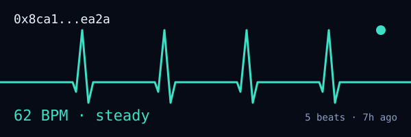

Case study · Live on Sepolia
WorldPulse
A token that pays you to give it away.
Every token in crypto rewards you for not using it. Staking, yield, holding — the entire incentive structure pays people to sit still. WorldPulse inverts that: holding earns nothing, and circulation earns everything.

The mechanism
- Every non-mint transfer is a beat. Caught in _update, so it cannot be bypassed.
- Reach, not repetition. Distinct recipients count; sending to the same address twice does not. A ring of sock puppets has low reach by construction.
- Rhythm. Beating in consecutive epochs multiplies your weight and a gap resets it. Funding ten addresses is instant; showing up for ten days is not.
- Introductions. Hand WPU to an address that has never held any and you earn four times an ordinary send — but only once that newcomer beats for real, so the sybil has to genuinely participate to collect.
Monetary policy
A 21,000,000 hard cap, emission halving every 365 epochs, and — the part that makes it a policy rather than a faucet — emission scaled by the network's own circulation. A dormant epoch mints nothing at all. Supply grows only when the money moves.
Summed across the whole curve it emits 19.71M, landing 289k under the cap once the genesis supply is counted. That was verified by summing every halving against the ceiling rather than assumed, and a test guards it so raising the base fails loudly instead of silently truncating the schedule in year seven.
What it taught me
The wallet originally rebuilt pulse by scanning Transfer logs. That silently stopped working, and the reason is worth knowing if you build on public infrastructure: free Sepolia RPCs retain only about 12,000 blocks of logs, and several return an empty array rather than an error. Measured against an active contract, the same endpoint gave 545 logs in the last 2,000 blocks and zero in a 2,000-block window seventeen months back.
An empty result that means "I do not have this" is indistinguishable from one that means "there is nothing here". The fix was to stop reconstructing history and put the pulse in contract storage, where every node serves it regardless of what it has pruned.